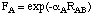
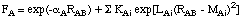

Semiempirical Methods
Semiempirical Methods are simplified versions of Hartree-Fock theory using empirical
(= derived from experimental data) corrections in order to improve performance. These
methods are usually referred to through acronyms encoding some of the underlying
theoretical assumptions. The most frequently used methods (MNDO, AM1, PM3) are all based on the
Neglect of Differential Diatomic Overlap (NDDO) integral approximation,
while older methods use simpler integral schemes such as CNDO and INDO. All three
approaches belong to the class of Zero Differential Overlap (ZDO)
methods, in which all two-electron integrals involving two-center charge distributions
are neglected. A number of additional approximations are made to speed up calculations
(see below) and a number of parameterized corrections are made in order to correct for
the approximate quantum mechanical model. How the parameterization is performed
characterizes the particular semiempirical method. For MNDO, AM1, and PM3 the parameterization
is performed such that the calculated energies are expressed as heats of formations
instead of total energies (see earlier remarks on this difference).
| acronym | full name | underlying
approximation | Parameters | Fitted-
Parameters
|
|---|
| CNDO | Complete Neglect of Differential Overlap | CNDO | - | -
|
| INDO | Intermediate Neglect of Differential Overlap | INDO | - | -
|
| MINDO/3 | Modified Intermediate Neglect of Differential Overlap, version 3 | INDO | 10 | 2
|
| MNDO | Modified Neglect of Differential Overlap | NDDO | 10 | 5
|
| AM1 | Austin Model 1 | NDDO | 13 | 8
|
| PM3 | Parametric Model number 3 | NDDO | 13 | 13
|
New versions of the NDDO methods have recently been developed that include d-Orbitals for second-row
and higher elements (MNDO/d and PM3(tm)). Also, a slightly extended and reparameterized version of PM3
termed PM5 has recently been made available in the program package MOPAC 2000.
In the following we will concentrate on the three methods available
in Gaussian (MNDO, AM1, PM3).
The first strategy used to reduce computational effort is to consider only valence
electrons in the quantum mechanical treatment. This is immediately obvious when comparing
Hartree-Fock with, for example, AM1 energy calculations on a molecule such as methanol:
#P AM1 scf=tight
AM1 energy of CH3OH (Cs)
0 1
C1
H2 1 r2
O3 1 r3 2 a3
H4 3 r4 1 a4 2 180.0
H5 1 r5 2 a5 3 d5
H6 1 r5 2 a5 3 -d5
r2=1.11900473
r3=1.41043172
r4=0.9641002
r5=1.11868093
a3=105.12806298
a4=107.16494018
a5=110.03331541
d5=119.51560095
| |
 |
Even though methanol CH3OH is composed of overall 6 nuclei and 18 electrons,
only 14 of the electrons are treated explicitly. The electrons located in the 1s orbitals of
oxygen and carbon are not considered explicitly, but combine with the nuclei to provide
an effective core potential for the valence electrons:
AM1
Standard basis: VSTO-3G (5D, 7F)
.
.
12 basis functions 36 primitive gaussians
7 alpha electrons 7 beta electrons
nuclear repulsion energy 25.1935849033 Hartrees.
|
HF/STO-3G
Standard basis: STO-3G (5D, 7F)
.
.
14 basis functions 42 primitive gaussians
9 alpha electrons 9 beta electrons
nuclear repulsion energy 40.2200678489 Hartrees.
|
The basis sets used in semiempirical calculations are specially optimized
minimal basis sets composed of Slater-type orbitals. As only valence electrons
are considered and the core electrons are treated together with the nuclei
as one effective core potential, it is clear that the simple point
charge model used in Hartree-Fock theory to calculate the nuclear repulsion
energies is inappropriate for semiempirical calculations. In order to compensate
for some of the approximations made in calculating the attractive core-electron
energies, the core-core potential used in NDDO methods goes beyond the use of
a simple point charge model with reduced nuclear charges such as:
EAB = Z'AZ'Be2/RAB
with RAB being the internuclear separation and Z'A being the
effective core charge including the nuclear charge and all core electrons. A general
expression for calculation of the core-core repulsion energies between nuclei A and B
at distance RAB in NDDO methods is:
EAB = Z'AZ'B<sAsA,sBsB>[1+ F(A) + F(B)]
The core repulsion energy is here a function of both the electron-electron repulsion
integral <sAsA,sBsB> as well as
atom-type dependent functions F(A) and F(B) which in turn depend on the internuclear
separation RAB. Functions F(A) and F(B) have a relatively simple form
in MNDO:

including only one additional parameter. In order to improve some of the deficiencies
of MNDO (especially those concerning hydrogen bonding), a slightly more complex
function was chosen for AM1:

The sum over additional exponentials inlcudes either three or four terms and introduces
three new parameters KAi, LAi, and MAi for each
element constituting the main difference (aside from the actual fitting procedure)
between AM1 and MNDO. Which set of parameters is used in a given semiempirical calculation
is specified in the Gaussian output file as:
References:
H: (AM1): M.J.S. DEWAR ET AL, J. AM. CHEM. SOC. 107 3902-3909 (1985)
C: (AM1): M.J.S. DEWAR ET AL, J. AM. CHEM. SOC. 107 3902-3909 (1985)
O: (AM1): M.J.S. DEWAR ET AL, J. AM. CHEM. SOC. 107 3902-3909 (1985)
For some of the elements, the core repulsion functions F(A) for a given
element depend on the interaction partner B. Taking the element boron as
an example, there are four different sets of parameters describing the
core of boron implying that Fboron is different in EBB,
EBH, EBC, and EBX!! Please note that this
functionality is not implemented in all programs, Gaussian being one
of the problematic cases. It is therefore not possible to perform AM1
calculations on boron-containing compounds in Gaussian. Any attempt
to do so anyway will lead to a calculation with mixed AM1 and MNDO parameters
identified in the output file as follows:
References:
H: (AM1): M.J.S. DEWAR ET AL, J. AM. CHEM. SOC. 107 3902-3909 (1985)
B: (MNDO): M.J.S. DEWAR, M.L. MCKEE, J. AM. CHEM. SOC., 99, 5231, (1977)
Warning. AM1 has been requested, along with some elements
for which only MNDO parameters are available. Such mixtures
of methods are very risky and have not been fully tested.
Indeed, these types of calculations are extremely unreliable and not worth
doing under any circumstance.
The performance of NDDO methods for a large number of molecular systems has been studied
repeatedly and the mean signed and unsigned errors for the heat of formation (kJ/mol)
in a set of 194 typical organic systems
containing the elements C, H, N, and O has been collected in the following table:
| method | MAD
unsigned | MAD
signed
|
|---|
| MNDO | 47.7 | +20.1
|
| AM1 | 30.1 | +10.9
|
| PM3 | 18.4 | +0.9
|
The performance is much worse for all three methods in cases involving second-row
elements such as S or P, the description of hypervalent compounds being particularly
problematic.
Another critical area of application concerns calculations of nitrogen-containing compounds.
While the inversion barriers for trivalent nitrogen are usually too low with AM1, they are
predicted to be too high with PM3. As a consequence, some non-planar nitrogen containing compounds
are predicted to be flat by AM1, while some flat compounds are predicted to be pyramidal by PM3.
This is particularly deplorable for peptide structures as a realistic description of conformational
space is impossible without a proper description of the amide bond. The performance of the
NDDO models might be appreciated better using the
dipeptide system used before in Hartree-Fock
geometry optmization. The planarity of the central
amide bond can be characterized through the C(O)-N-H-C dihedral angle, being
180o for a fully planar conformation:

| method | C(O)-N-H-C
dihedral
|
|---|
| MNDO | 157
|
| AM1 | 161
|
| PM3 | 143
|
| PM3MM | 157
|
Pyramidalization of the amide nitrogen is indeed largest with PM3 and smallest with AM1.
In order to rescue the situation the PM3 method is also available in a PM3MM
version, adding a simple molecular mechanics correction term to the amide linkage. It can be seen
quite nicely in the above example, that the amide bond becomes more planar upon inclusion
of this correction term. Whether or not this correction term is in use can be seen in the
output file as:
NNHCO= 2.
References:
H: (PM3): J. J. P. STEWART, J. COMP. CHEM. 10, 209 (1989).
C: (PM3): J. J. P. STEWART, J. COMP. CHEM. 10, 209 (1989).
N: (PM3): J. J. P. STEWART, J. COMP. CHEM. 10, 209 (1989).
O: (PM3): J. J. P. STEWART, J. COMP. CHEM. 10, 209 (1989).
A reliable prediction of peptide conformations is, however, not
possible even with these corrections.
One important point to consider when comparing the performance of semiempirical calculations
with other theoretical methods such as Hartree-Fock or DFT is that the former have been parameterized
to include all thermochemical corrections to yield heat of formations at 300K, while the
latter have not. Also, through parameterization with reference to experimental data, semiempirical
methods *might* be expected to recover some part of electron correlation effects. This is, of
course, only true for the ground state systems included in the parameterization procedure
and not necessarily true for transition states or electronically excited states.
last changes: 12.12.2005, HZ
questions & comments to: zipse@cup.uni-muenchen.de